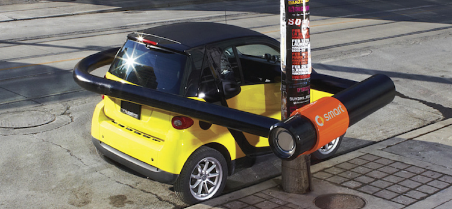

Oct 30, 2016 · 1 minute read
DevelopmentGoLang
Saw the new Microsoft Surface Studio this weekend at the Microsoft store at the South Coast Plaza. I thought the display is pretty mind blowing. I have gotten used to wide screen displays but somehow the resolution and format of the screen just feels right. The display floats in space and fills your field of vision.
The surface dial seems like it would be a gimmick but it isn’t. It feels very natural particularly when zooming in and out.
Read On →
Oct 29, 2016 · 3 minute read

When I was growing up, when you read the paper, watched the news, saw a film or a picture, you inherently believed in it. You trusted the reality it portrayed. You trusted in journalism and even believed the news was actually “fair and balanced”. If you heard someone say “Kennedy’s death was faked” you would disbelieve them because you saw the evidence yourself.
Then we all learned the hard way that we can’t trust the Internet. We no longer know what is real and what is fake. With everything now digital, and with excellent tools to edit audio, video, and photos, we have become skeptics. As soon as we see a viral video on YouTube we immediately say to ourselves “that’s probably fake”. Every magazine with a beautiful girl on the cover we think to ourselves “Photoshop”. When we read a blog post we think “spin”.
Read On →
Oct 3, 2015 · 3 minute read
At one point in time I worked for an organization that banned the use of open source software. They were concerned that in the event of issues “there would be no support”. At the time they believed that commercial software from companies like IBM, Oracle, Microsoft and SAP was “safer” because there was a commercial entity that stood behind the products they sold and provided support.
Now that’s changing
Most technology leadership today recognizes that proprietary software is not safer than open source software. Basic metrics around the number of disclosed vulnerabilities and “time to patch availability” seem to give an edge to open source software at least being patched faster. Not only that but you have the option to inspect the code yourself, and patch it yourself - options that are simply not available with commercial, closed software. This causes a re-evaluation of the relationship of proprietary, commercial software to operating a safe and secure business.
The recent Volkswagen scandal brings to light the broader question of how vulnerable we are to software that is beyond oversight. Today when we have software running critical systems like medical devices, transportation systems, elevators, and cars we are realizing this code must be open to inspection. This does not mean the code must be open source - only that the code must be available for inspection and oversight.
Read On →
Sep 26, 2015 · 6 minute read

Q: Is it secure?
A: No it is not. Security is never binary.
Q: OK, how secure is it?
A: It seems like you just asked that question.
Q: No, the first question was if it’s secure, the second question was how secure is it.
A: Well now that wasn’t even a question at all.
Read On →
Sep 26, 2015 · 1 minute read
Ask a programmer to review 10 lines of code, they’ll make 10 suggestions. Ask them to review 1,000 lines of code and they’ll say “it looks good!”
Many people have begun integrating bots into the GitHub ecosystem for code review. For example the folks who created the Bootstrap UI framework created a bot called rorshach to perform sanity checks on pull requests. If the sanity check fails it leaves a nice informative comment, explaining the issue and how to fix it.
Read On →